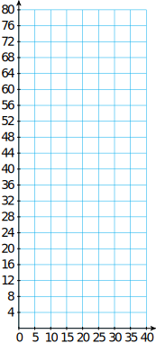

Section 1.1 Linear Models
¶Subsection Tables, Graphs, and Equations
Definition 1.1. Mathematical Model.
A mathematical model is a simplified description of reality that helps us understand a system or process.
We can use a model to analyze data, identify trends, and predict the effects of change. The first step in creating a model is to describe relationships between the variables involved.
Notebook 1.2. QuickCheck 1.
Starting from a description in words, we can represent the relationship by:
a table of values
a graph, or by
an algebraic equation
Each of these mathematical tools is useful in a different way.
- A table of values lists specific data points with precise numerical values.
- A graph is a visual display of the data. It is easier to spot trends and describe the overall behavior of the variables from a graph.
- An algebraic equation is a compact summary of the model. It can be used to analyze the model and to make predictions.
Notebook 1.3. QuickCheck 2.
In the examples that follow, observe the interplay among the three modeling tools and how each contributes to the model.
Example 1.4.
In May 2005, the city of Lyons, France, started a bicycle rental program. Over 3,000 bicycles are available at 350 computerized stations around the city. Each of the 52,000 subscribers pays an annual 5 euro fee (about $7.20) and gets a PIN to access the bicycles. The bicycles rent for 1 euro per hour and can be returned to any station.
Your community decides to set up a similar program, charging a $5 subscription fee and $3 an hour for rental. (A fraction of an hour is charged as the corresponding fraction of $3).
Make a table of values showing the cost, \(C\text{,}\) of renting a bike for various lengths of time, \(t\text{.}\)
Plot the points on a graph. Draw a curve through the data points.
Write an equation for \(C\) in terms of \(t\text{.}\)
-
There is an initial fee of $5, and a rental fee of $3 per hour. To find the cost, we multiply the time by $3 per hour, and add the result to the $5 subscription fee. For example, the cost of a one-hour bike ride is
\begin{align*} \text{Cost}\amp=(\$5\text{ insurance fee})+(\$3\text{ per hour})\times(\alert{\text{one hour}})\\ C\amp=5+3(\alert{1})=8 \end{align*}A one-hour bike ride costs $8.
We calculate the cost for the other values of \(t\text{.}\) and record the results in a table as shown below.
Length of rental
(hours)Cost of rental
(dollars)\((t,C)\) \(0\) \(5\) \(\quad C=5+3(\alert{0})\quad\) \((0,5)\) \(1\) \(8\) \(\quad C=5+3(\alert{1})\quad\) \((1,8)\) \(2\) \(11\) \(C=5+3(\alert{2})\) \((2,11)\) \(3\) \(14\) \(C=5+3(\alert{3})\) \((3,14)\) Each pair of values represents a point on the graph. The first value gives the horizontal coordinate of the point, and the second value gives the vertical coordinate.
The points lie on a straight line, as shown in the figure. The line extends infinitely in only one direction, because negative values of \(t\) do not make sense here.

-
To write an equation, we let \(C\) represent the cost of the rental, and we use \(t\) for the number of hours:
\begin{align*} \text{Cost}\amp=(\$5\text{ subscription})+\$3\cdot\text{(number of hours)}\\ C\amp=5+3\cdot t \end{align*}
Notebook 1.5. Practice 1.
Subsection Equations for Linear Models
The equation we wrote in the first Example is an example of a linear model, which describes a variable that increases or decreases at a constant rate.
Definition 1.6. Linear Model.
A linearl model describes a variable that increases or decreases at a constant rate. It has the form
Notebook 1.7. QuickCheck 3.
In the next example we see how a graph and its equation are related.
Example 1.8.
Use the equation \(C=5+3\cdot t\) you found in Example 1.4 to answer the following questions. Then show how to find the answers by using the graph.
How much will it cost to rent a bicycle for 6 hours?
How long can you bicycle for $18.50?
-
We substitute \(t=\alert{6}\) into the equation to find
\begin{equation*} C=5+3(\alert{6})=23 \end{equation*}A 6-hour bike ride will cost $23. The point \(P\) on the graph in the figure represents the cost of a 6-hour bike ride. The value on the \(C\)-axis at the same height as point \(P\) is 23, so a 6-hour bike ride costs $23.
We substitute \(C=\alert{18.50}\) into the equation and solve for \(t\text{.}\)
\begin{align*} \alert{18.50}\amp=5+3t\\ 13.50\amp=3t\\ t\amp=4.5 \end{align*}For $18.50 Annelise can bicycle for \(4\frac{1}{2} \) hours. The point \(Q\) on the graph represents an $18.50 bike ride. The value on the \(t\)-axis below point \(Q\) is 4.5, so $18.50 will buy a 4.5 hour bike ride.

Notebook 1.9. Practice 2.

In Example 1.8, note the different algebraic techniques we used in parts (a) and (b):
In part (a) we were given a value of \(t\) and we evaluated the expression \(5 + 3t\) to find \(C\text{.}\)
In part (b) we were given a value of \(C\) and we solved the equation \(C = 5 + 3t\) to find \(t\text{.}\)
Notebook 1.10. QuickCheck 4.
In the examples above, the graph is increasing as \(t\) increases. In the next Example we consider a decreasing graph.
Example 1.11.
Leon's camper has a 20-gallon gas tank, and he gets 12 miles to the gallon. (Note that getting 12 miles to the gallon is the same as using \(\frac{1}{12}\) gallon of gas per mile.)
Write an equation for the amount of gasoline, \(g\text{,}\) left in Leon's tank after he has driven for \(d\) miles.
Make a table of values for the equation.
Graph the equation,
If Leon has less than 5 gallons of gas left, how many miles has he driven since his last fill-up? Illustrate on the graph.
-
We use the form for a linear model,
\begin{gather*} y=(\text{starting value})+(\text{rate})\times t \end{gather*}However, in this problem, instead of variables \(y\) and \(t\text{,}\) we use \(g\) and \(d\text{.}\) Leon's fuel tank started with 20 gallons, and the amount of gasoline is decreasing at a rate of \(\frac{1}{12}\) gallon for every mile that he drives. Thus,
\begin{gather*} g=20-\frac{1}{12}d \end{gather*} -
Every time Leon drives 12 miles, he uses another gallon of gasoline. So, to make the calculations easier, we choose values that are divisible by 12.
\(d\) (miles) 0 48 96 144 \(g\) (gallons) 20 16 12 8 We scale the values of \(d\) along the horizontal axis, and the values of \(g\) along the vertical axis. Then we plot the points from the table and connect with a line, as shown in the figure below.
-
If Leon has less than 5 gallons of gasoline left, then \(g\lt 5\text{,}\) as shown on the \(g\)-axis. Using our model from part (a), we solve the inequality.
\begin{align*} 20-\frac{1}{12}d \amp \lt 5 \\ -\frac{1}{12}d \amp \lt -15 \\ d \amp\gt 180 \end{align*}Leon has driven at least 180 miles. The solution is shown on the graph below.
In part (d) of the previous Example we used an inequality to answer the question. We use inequalities to model English phrases such as "less than," "more than," "at least," and "at most."
Notebook 1.12. Practice 3.
Exercises Problem Set 1.1
¶Skills Practice
1.
Solve the equation.
\(8x-18=16\)
\(14-\dfrac{3}{4}x=5 \)
2.
Solve the inequality.
\(8x-18\lt 16\)
\(14-\dfrac{3}{4}x \ge 5 \)
3.
April sells environmentally friendly cleaning products. Her income consists of $200 per week plus a commission of 9% of her sales. Write an algebraic expression for April's weekly income, \(I\text{,}\) in terms of her sales, \(S\text{.}\)
4.
Trinh is bicycling down a mountain road that loses 500 feet in elevation for each 1 mile of road. She started at an elevation of 6300 feet. Write an expression for Trinh's elevation, \(h\text{,}\) in terms of the distance she has cycled, \(d\text{.}\)
For problems 5 and 6, solve the equation.
5.
\(3y+2y=12-5y\)
6.
\(0.8w - 2.6 = 1.4w + 0.3\)
For problems 7 and 8, solve the inequality.
7.
\(3y+2y\gt 12-5y\)
8.
\(0.8w - 2.6 \le 1.4w + 0.3\)
9.
Bruce buys a 50-pound bag of rice and consumes about 0.4 pounds per week. Write an expression for the amount of rice, \(R\text{,}\) Bruce has left in terms of the number of weeks, \(w\text{,}\) since he bought the bag.
10.
Delbert is offered a job as a salesman. He will be paid $1000 per month plus a 6% commission on his sales. Write an expression for Delbert's monthlyincome, \(I\text{,}\) in terms of his sales, \(S\text{.}\)
Applications
11.
Frank plants a dozen corn seedlings, each 6 inches tall. With plenty of water and sunlight they will grow approximately 2 inches per day. Complete the table of values for the height, \(h\text{,}\) of the seedlings after \(t\) days.
-
Complete the table of values for the height, \(h\) of the seedlings after \(t\) days.
\(t\) (days) \(0\) \(5\) \(10\) \(15\) \(20\) \(h\) (inches) Write an equation for the height, \(h\text{,}\) of the seedlings in terms of the number of days, \(t\text{,}\) since they were planted.
-
Graph the equation on the grid. Label the axes with the correct variables.
To answer questions (d) and (e), read the graph. Show your work on the graph:
 How tall is the corn after 3 weeks?
When will the corn grow to 6 feet tall? (How many inches is 6 feet?)
Use algebra to find the answers for parts (d) and (e) above.
-
Frank also sets out some tomato plants. The height of the plants ininches after \(t\) days is:
\begin{gather*} h = 14 + 1.5t \end{gather*}What do the constants in this equation tell us about the tomato plants?
12.
On October 31, Betty and Paul fill their 250-gallon oil tank for their heater. Beginning in November they use an average of 15 gallons of oil per week.
-
Complete the table of values for the amount of oil, \(A\text{,}\) left in the tank after \(w\) weeks.
\(w\) (weeks) \(0\) \(4\) \(8\) \(12\) \(16\) \(A\) (gallons) Write an equation that expresses the amount of oil, \(A\text{,}\) in terms of the number of weeks, \(w\text{,}\) since October 31.
-
Graph the equation.

How much did the amount of fuel oil in the tank decrease between the third week and the eighth week? Illustrate this amount on the graph.
During which weeks will the tank contain more than 175 gallons of fuel oil? Illustrate on the graph.
Write and solve an inequality to verify your answer to part (e).